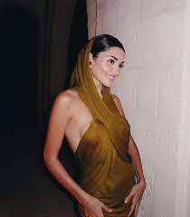

Hande Erçel is a talented Turkish actress and model, born on November 24, 1993. She gained fame with her role as Hayat Uzun in the popular TV series "Aşk Laftan Anlamaz." Hande has also starred in several successful Turkish TV shows and movies.
Hande Erçel is a highly acclaimed Turkish actress and model, known for her outstanding talent and captivating beauty. She was born on November 24, 1993, in Bandırma, Turkey. Hande's rise to stardom is a remarkable journey filled with remarkable achievements and contributions to the entertainment industry.
Her breakthrough moment came with her role as Hayat Uzun in the immensely popular TV series "Aşk Laftan Anlamaz." This romantic comedy series gained widespread acclaim, and Hande's portrayal of the lead character made her a household name not only in Turkey but also in international markets.
Hande Erçel's success extends beyond "Aşk Laftan Anlamaz." She has graced Turkish television with her presence in various other hit shows, including "Halka" (2019), "Azize" (2019), and "Sen Çal Kapımı" (2020). Her diverse acting skills and ability to adapt to different roles have made her a sought-after actress in the Turkish entertainment industry.
In addition to her work in television, Hande has ventured into the world of cinema. She made her mark in the film industry with "Aşk 101" (2021), showcasing her versatility as an actress.
Hande Erçel's charismatic presence and dedication to her craft have earned her a dedicated fan base and numerous accolades. She continues to be a prominent figure in the world of entertainment, captivating audiences with her talent and charm.
Hande Erçel's filmography is filled with a wide range of roles that have showcased her exceptional acting skills. Here's an extended list of some of her remarkable works in television:
Hande Erçel's dedication to her craft and her ability to bring depth to her characters have solidified her status as one of Turkey's most adored and accomplished actresses. Her contributions to these TV series have left an indelible mark on the world of Turkish television.
Hande Erçel is not only a remarkable actress but also an intriguing personality. Here's some additional information about her life:
| First Name | Last Name | Age | Occupation | City | Date of Birth |
|---|
Hande Erçel was born on November 24, 1993, in Bandırma, Turkey. She grew up in a small town but eventually moved to Istanbul to pursue her career in modeling and acting.
In addition to her acting career, Hande is a notable fashion icon. She is known for her impeccable style and has served as a brand ambassador for several renowned fashion and beauty companies.
Hande Erçel has won several awards for her outstanding acting, including the Golden Orange Award for Best Actress in a Leading Role. Her contributions to the entertainment industry have garnered widespread recognition and acclaim.
Did you know that Hande Erçel is multilingual? Besides Turkish, she is also fluent in English and Italian, which has contributed to her international appeal.